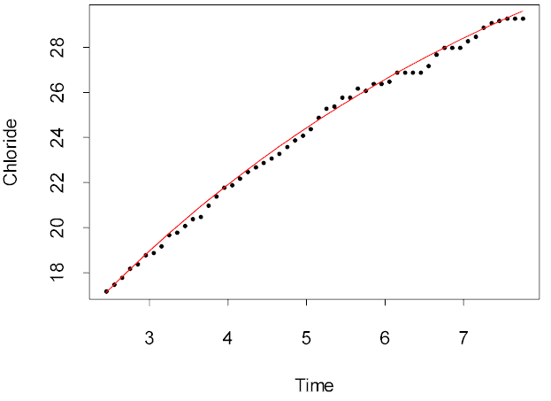
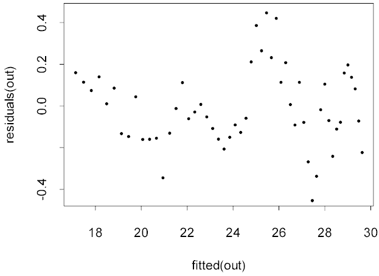

| / Home |
Keywords: nonlinear regression, exponential function, heterscedasticity, autocorrelated residuals
The data related to the transport of sulfite ions from blood cells suspended in a salt solution. The chloride concentration (%) was measured over a period of about 8 minutes as a continuous curve generated from electrical potentials. The data given here were digitized from the curve at 10 second intervals.
The theory of ion transport suggested that the concentration asymptote exponentially, i.e.,
Chloride = q1{1 - q2exp(- q3Time)}
| Variable | Description | ||
| Time | Elapsed time in minutes | ||
| Chloride | Chloride concentration (%) | ||
Data File (tab-delimited text)
| Sredni, J. (1970). Problems of Design, Estimation and Lack of Fit in Model Building. PhD Thesis, University of Wisconsin-Madison. |
Bates, D. M., and Watts, D. G. (1988). Nonlinear Regression Analysis and Its Applications. Wiley, New York. |
The data were originally collected by W. H. Dennis and P. Wood at the University of Wisconsin. The data were obtained electronically from the web site Data sets from "Nonlinear Regression Analysis" maintained by Douglas Bates. |
> chloride <- read.table("chloride.txt",header=T)
> attach(chloride)
> plot(Time,Chloride)
> out <- nls(Chloride~cbind(1,exp(-b*Time)),start=list(b=0.1),algorithm="plinear")
> summary(out)
Formula: Chloride ~ cbind(1, exp( - b * Time))
Parameters:
Value Std. Error t value
b 0.158523 0.010444 15.1784
39.094900 0.974427 40.1209
-32.387600 0.561816 -57.6481
Residual standard error: 0.191962 on 51 degrees of freedom
Correlation of Parameter Estimates:
b
-0.994
0.911 -0.950
> lines(Time,fitted(out),col=2)

> plot(fitted(out),residuals(out))

|
Home - About Us -
Contact Us Copyright © Gordon Smyth |